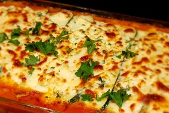

Back to Home
No-Noodle Zucchini Lasagna

Description
Gluten-free Lasagna using zucchini in place of pasta
Ingredients
- 2 large zucchini
- 1 Tbsp salt
- 1 lb ground beef
- 1 ½ tsp ground black pepper
- 1 small green pepper, diced
- 1 onion, diced
- 1 can (16oz) tomato sauce
- 1 cup tomato paste
- ¼ cup red wine
- 2 Tbsp chopped fresh basil
- 1 Tbsp chopped fresh oregano
- 2 Tbsp chopped fresh parsley
- 3 Tbsp hot water, or as needed
- 1 container (15oz) low-fat ricotta cheese
- 1 egg
- 1 package (16oz) frozen chopped spinach, thawed and drained
- 1 lb fresh mushrooms, sliced
- 8 oz shredded mozzarella cheese
- 8 oz grated Parmesan cheese